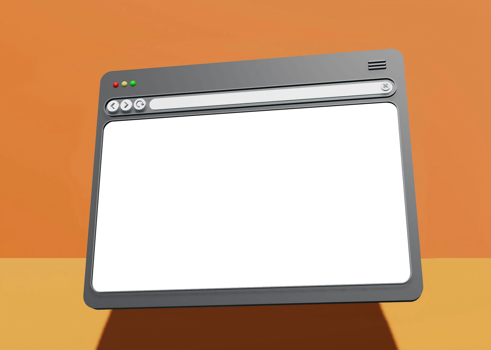

A URL is the unique address used to locate a specific resource — such as a web page, image, or file — on the Internet.

A Uniform Resource Locator (URL) is a reference or address used to access resources on the Internet. Every web page, image, video, and file hosted online has a unique URL that identifies its exact location.
URLs were created by Tim Berners-Lee in 1994 as part of the foundational standards for the World Wide Web.
A typical URL has several distinct parts, for example: https://www.example.com/page?id=1
URLs are the addressing system of the Web. Without them, there would be no way to reliably locate and share specific resources online. They are fundamental to navigation, linking, search engines, and web development.